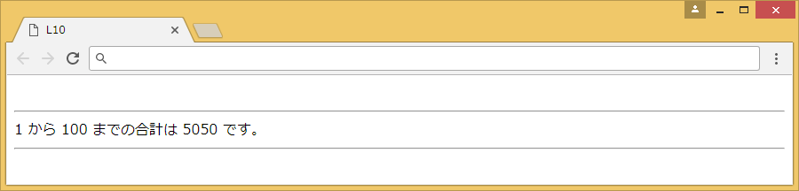
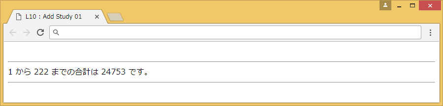

[Lesson 10] while 文
while文を使用し、指定された連続した数値の合計を求める関数を作成しましょう。
[ 保存名 ] L10
[ プログラム仕様書 ] while文を使用し、指定された数値までの足し算を繰り返すgoukei関数を作成する。
[ 実行イメージ ]

[コード入力手順]
① 指定された数値nまで足し算を繰り返すgoukei(n)関数を作成する。
・繰り返しの処理はwhileを使用する。
function goukei(p){
total=0;
i-1;
while(i<=n){
total= ;
i++;
}
return ;
}
② 変数xを用意し100を代入する。total=0;
i-1;
while(i<=n){
total= ;
i++;
}
return ;
}
③ goukei()関数を引数xで呼び出して使用する。
ポイント
■ while文のループ
while文によるループは、条件が真である間ループを繰り返します。
条件には論理地（真か偽）を繰り返す条件式を作成します。
while(条件){
処理;
}
処理;
}
■ 合計を求めるアルゴリズム
合計を求めるには、合計用の記憶場所「total：」を用意して集計します。
電卓で集計するときは始めにAC(All Clear)キーを押して0にしてから始めるのと同じように初期値を必ず0にしておきます。
total=0;
そして、集計するデータを「total」に繰り返し加算していきます。これは電卓で表示されている古い合計にデータを加算して新しい合計を表示するのと同じです。
total+=i;(またはtotal=total+i;)
求めた値(total)を返すときは、return文を使います。
return total;
追加練習
変数xの値を変更して計算の確認を行う。
実行イメージ
※実行イメージでは、「222」を代入しています。
答え
分からなかった場合などは答えを見てみましょう。
<script>
function goukei(n){
total=0;
i=1;
while(i<=n){
total+=i;
i++;
}
return total;
}
var x=100;
goukei(x);
document.write("1 から "+x+" までの合計は "+total+" です。");
</script>
<script>
function goukei(n){
total=0;
i=1;
while(i<=n){
total+=i;
i++;
}
return total;
}
var x=222;
goukei(x);
document.write("1 から "+x+" までの合計は "+total+" です。");
</script>